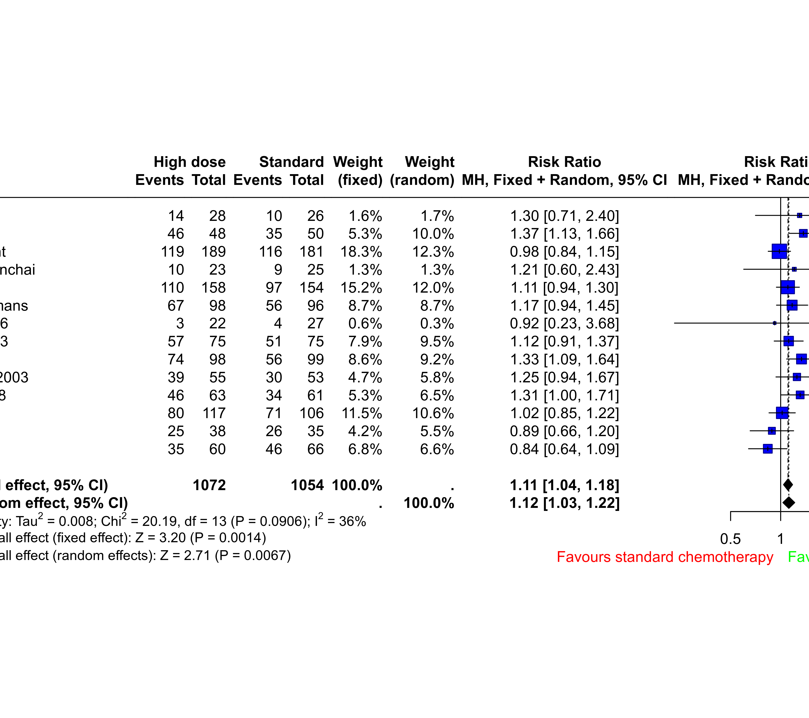

dat.greb2008.RdResults on complete response from 14 trials evaluating high-dose chemotherapy with autologous stem cell transplantation in patients with aggressive non-Hodgkin lymphoma.
dat.greb2008The data frame contains the following columns:
| study | character | study label |
| Ee | integer | complete responses (high-dose chemotherapy) |
| Ne | integer | number of patients (high-dose chemotherapy) |
| Ec | integer | complete responses (standard chemotherapy) |
| Nc | integer | number of patients (standard chemotherapy) |
Greb et al. (2008) conducted a Cochrane Review to assess the effects of high-dose chemotherapy with autologous stem cell transplantation as part of the first-line treatment of adult patients with aggressive non-Hodgkin lymphoma. The primary outcome was survival time; the binary outcome ‘complete response’ was one of several secondary outcomes. For binary outcomes, the Cochrane review used the risk ratio and the common effect model.
This data set is used as an example in Schwarzer et al. (2015).
Greb, A., Bohlius, J., Schiefer, D., Schwarzer, G., Schulz, H., & Engert, A. (2008). High-dose chemotherapy with autologous stem cell transplantation in the first line treatment of aggressive Non-Hodgkin Lymphoma (NHL) in adults. Cochrane Database of Systematic Reviews, 1, CD004024. https://doi.org/10.1002/14651858.cd004024.pub2
Schwarzer, G., Carpenter, J. R., & Rücker, G. (2015). Meta-analysis with R. Cham, Switzerland: Springer.
medicine, oncology, risk ratios
### Show first five studies
head(dat.greb2008, 5)
#> study Ee Ne Ec Nc
#> 1 De Souza 14 28 10 26
#> 2 Gianni 46 48 35 50
#> 3 Gisselbrecht 119 189 116 181
#> 4 Intragumtornchai 10 23 9 25
#> 5 Kaiser 110 158 97 154
### Load meta package
suppressPackageStartupMessages(library(meta))
### Use RevMan 5 settings
oldset <- settings.meta("RevMan5")
### Conduct common effect meta-analysis with risk ratio as effect measure
mb1 <- metabin(Ee, Ne, Ec, Nc,
data = dat.greb2008, studlab = study,
label.e = "High dose", label.c = "Standard",
label.left = "Favours standard chemotherapy",
label.right = "Favours high dose chemotherapy",
col.label.left = "red", col.label.right = "green")
mb1
#> Number of studies: k = 14
#> Number of observations: o = 2126 (o.e = 1072, o.c = 1054)
#> Number of events: e = 1366
#>
#> RR 95%-CI z p-value
#> Fixed effect model 1.11 [1.04, 1.18] 3.20 0.0014
#> Random effects model 1.12 [1.03, 1.22] 2.71 0.0067
#>
#> Quantifying heterogeneity (with 95%-CIs):
#> tau^2 = 0.008; tau = 0.0888; I^2 = 36% [0%, 66%]; H = 1.25 [1.00, 1.71]
#>
#> Test of heterogeneity:
#> Q d.f. p-value
#> 20.19 13 0.0906
#>
#> Details of meta-analysis methods:
#> - Mantel-Haenszel method (fixed effect model)
#> - Inverse variance method (random effects model)
#> - DerSimonian-Laird estimator for tau^2
#> - Mantel-Haenszel estimator used in calculation of Q and tau^2 (like RevMan 5)
#> - Calculation of I^2 based on Q
### Create forest plot
forest(mb1)

### Use previous settings
settings.meta(oldset)